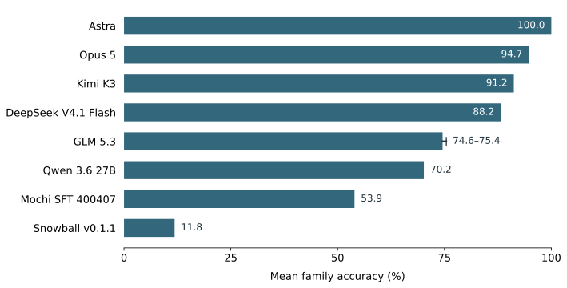
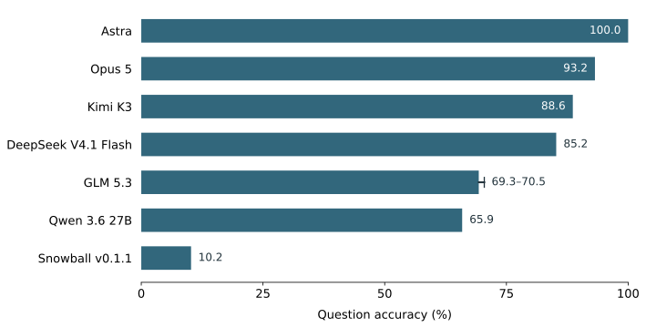
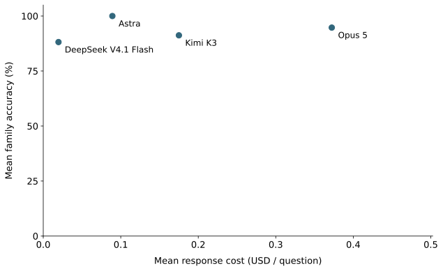
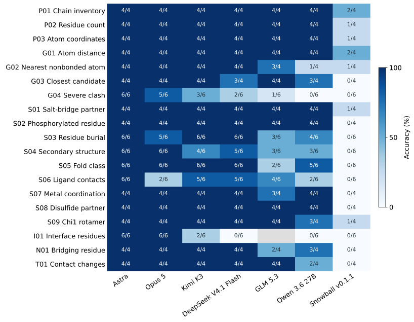

PDBThink · coordinate report v6 · explicit no-tools evaluation
Reasoning from protein coordinates
88 identical questions across 19 families, evaluated against the
corrected scientific contract on main.
Current results — incomplete response coverage or required capacity recoveries remain. The coordinate-reasoning headline excludes retired MECH tasks and the separate F01/F02 sequence-prediction tracks.
Model accuracy
Exact correctness requires the complete answer and required format. The headline weights all 19 families equally. The micro score weights questions equally. A truncated or malformed returned answer is incorrect; an unreturned request is missing. Required capacity recoveries remain provisional. Incomplete rows show lower–upper bounds for missing responses and pending recoveries, not confidence intervals. Output-limit truncation means the endpoint's declared output ceiling was reached. Context exhaustion means the full remaining prompt-plus-output window was consumed. Provider cutoffs below the requested allowance and interrupted streams are collection failures, not incorrect answers. Truncation and format-error counts can overlap.


Download all figures · SVG and PDF vectors, plus 300-dpi PNGs.
| Model | Correct / returned / planned | Exact family macro | Exact micro | Output limit | Context exhausted | Format errors |
|---|---|---|---|---|---|---|
| Astra | 88 / 88 / 88 | 100.0% | 100.0% | 0 | 0 | 0 |
| Opus 5 | 82 / 88 / 88 | 94.7% | 93.2% | 1 | 0 | 1 |
| Kimi K3 | 78 / 88 / 88 | 91.2% | 88.6% | 0 | 0 | 0 |
| GLM 5.3 (max) | 61 / 87 / 88 | 74.6–75.4% (incomplete) | 69.3–70.5% | 0 | 25 | 25 |
| Qwen 3.6 27B FP8 | 58 / 88 / 88 | 70.2% | 65.9% | 0 | 1 | 3 |
| Marin Snowball v0.1.1 (256K) | 9 / 88 / 88 | 11.8% | 10.2% | 0 | 7 | 45 |
| DeepSeek V4.1 Flash 1017 | 75 / 88 / 88 | 88.2% | 85.2% | 0 | 0 | 0 |
| Mochi Hero SFT 400407 (BF16) | 44 / 88 / 88 | 53.9% | 50.0% | 0 | 22 | 25 |
Accuracy and inference cost

Cost is the mean recorded charge for one selected response per question, including prompt, reasoning and answer tokens. Correct, incorrect and truncated responses all count. Charges reflect the routes, prices and cache discounts in effect during collection. We use the saved OpenRouter usage records; credits are denominated in USD.
This measures response inference cost, not total experiment spending: probes, failed or superseded attempts, credit-purchase fees and hosting overhead are excluded. Qwen, Snowball and Mochi have no measured infrastructure cost in this archive. Missing charges remain unknown; they are never treated as zero. Incomplete runs and models with missing charges are omitted from the plot.
| Model | Costed / returned / planned | Known response charges (USD) | Complete panel (USD) | Mean per question (USD) |
|---|---|---|---|---|
| Astra | 88 / 88 / 88 | 7.8463 | 7.8463 | 0.0892 |
| Opus 5 | 88 / 88 / 88 | 32.7593 | 32.7593 | 0.3723 |
| Kimi K3 | 88 / 88 / 88 | 15.4015 | 15.4015 | 0.1750 |
| GLM 5.3 (max) | 58 / 87 / 88 | 3.4749 | Unavailable | Unavailable |
| Qwen 3.6 27B FP8 | 0 / 88 / 88 | Unavailable | Unavailable | Unavailable |
| Marin Snowball v0.1.1 (256K) | 0 / 88 / 88 | Unavailable | Unavailable | Unavailable |
| DeepSeek V4.1 Flash 1017 | 88 / 88 / 88 | 1.7305 | 1.7305 | 0.0197 |
| Mochi Hero SFT 400407 (BF16) | 0 / 88 / 88 | Unavailable | Unavailable | Unavailable |
Accuracy by question family

Cells show exact correct / returned. Every model receives the same frozen panel.
| Family | Astra | Opus 5 | Kimi K3 | GLM 5.3 (max) | Qwen 3.6 27B FP8 | Marin Snowball v0.1.1 (256K) | DeepSeek V4.1 Flash 1017 | Mochi Hero SFT 400407 (BF16) |
|---|---|---|---|---|---|---|---|---|
| P01 · Chain inventory (4 questions) | 4 / 4 | 4 / 4 | 4 / 4 | 4 / 4 | 4 / 4 | 2 / 4 | 4 / 4 | 4 / 4 |
| P02 · Residue count (4 questions) | 4 / 4 | 4 / 4 | 4 / 4 | 4 / 4 | 4 / 4 | 1 / 4 | 4 / 4 | 3 / 4 |
| P03 · Atom coordinates (4 questions) | 4 / 4 | 4 / 4 | 4 / 4 | 4 / 4 | 4 / 4 | 1 / 4 | 4 / 4 | 3 / 4 |
| G01 · Atom distance (4 questions) | 4 / 4 | 4 / 4 | 4 / 4 | 4 / 4 | 4 / 4 | 2 / 4 | 4 / 4 | 4 / 4 |
| G02 · Nearest nonbonded atom (4 questions) | 4 / 4 | 4 / 4 | 4 / 4 | 3 / 4 | 1 / 4 | 1 / 4 | 4 / 4 | 2 / 4 |
| G03 · Closest candidate (4 questions) | 4 / 4 | 4 / 4 | 4 / 4 | 4 / 4 | 3 / 4 | 0 / 4 | 3 / 4 | 2 / 4 |
| G04 · Severe clash (6 questions) | 6 / 6 | 5 / 6 | 3 / 6 | 1 / 6 | 0 / 6 | 0 / 6 | 2 / 6 | 0 / 6 |
| S01 · Salt-bridge partner (4 questions) | 4 / 4 | 4 / 4 | 4 / 4 | 4 / 4 | 4 / 4 | 1 / 4 | 4 / 4 | 2 / 4 |
| S02 · Phosphorylated residue (4 questions) | 4 / 4 | 4 / 4 | 4 / 4 | 4 / 4 | 4 / 4 | 0 / 4 | 4 / 4 | 4 / 4 |
| S03 · Residue burial (6 questions) | 6 / 6 | 5 / 6 | 6 / 6 | 3 / 6 | 4 / 6 | 0 / 6 | 6 / 6 | 4 / 6 |
| S04 · Secondary structure (6 questions) | 6 / 6 | 6 / 6 | 4 / 6 | 3 / 6 | 3 / 6 | 0 / 6 | 5 / 6 | 4 / 6 |
| S05 · Fold class (6 questions) | 6 / 6 | 6 / 6 | 6 / 6 | 2 / 6 | 5 / 6 | 0 / 6 | 6 / 6 | 0 / 6 |
| S06 · Ligand contacts (6 questions) | 6 / 6 | 2 / 6 | 5 / 6 | 4 / 6 | 2 / 6 | 0 / 6 | 5 / 6 | 1 / 6 |
| S07 · Metal coordination (4 questions) | 4 / 4 | 4 / 4 | 4 / 4 | 3 / 4 | 4 / 4 | 0 / 4 | 4 / 4 | 3 / 4 |
| S08 · Disulfide partner (4 questions) | 4 / 4 | 4 / 4 | 4 / 4 | 4 / 4 | 4 / 4 | 0 / 4 | 4 / 4 | 2 / 4 |
| S09 · Chi1 rotamer (4 questions) | 4 / 4 | 4 / 4 | 4 / 4 | 4 / 4 | 3 / 4 | 1 / 4 | 4 / 4 | 4 / 4 |
| I01 · Interface residues (6 questions) | 6 / 6 | 6 / 6 | 2 / 6 | 0 / 5 | 0 / 6 | 0 / 6 | 0 / 6 | 0 / 6 |
| N01 · Bridging residue (4 questions) | 4 / 4 | 4 / 4 | 4 / 4 | 2 / 4 | 3 / 4 | 0 / 4 | 4 / 4 | 2 / 4 |
| T01 · Contact changes (4 questions) | 4 / 4 | 4 / 4 | 4 / 4 | 4 / 4 | 2 / 4 | 0 / 4 | 4 / 4 | 0 / 4 |
Snowball: the 256K release
This comparison uses Marin Snowball 67B-A2B v0.1.1, revision 59852d6f07261722bbec1edb6ab148317156b58e. Its model configuration declares 262,144 tokens; the live server registry confirms that same context length. Exact tokenisation of all 88 full prompts ranges from 12,671 to 63,024 input tokens. Every full prompt in the revised panel is admitted, and the response allowance is the full remaining context after exact server tokenisation.
The October report used the older Step38 checkpoint served at 32,768 tokens, with a 40-question context-fitting subset. Those historical scores describe that earlier model and serving setup. They are not a context limit or result for v0.1.1. This report compares v0.1.1 across all 88 questions. It runs in BF16 on two H100 GPUs per replica using expert parallelism, the supplied tokenizer, the grug reasoning parser and Marin vLLM 0.0.0.dev20260924+marin.01911be34fac.cu132. The November 9 experimental plumbing checkpoint is not used. Historical scores are not directly comparable to this revision because both prompts and model conditions changed.
Mochi: Hero SFT step 400407
Mochi uses hero-sft-step400407 in BF16 with a 262,144-token context. All 88 unchanged
prompts fit, consuming 12,671–63,024 tokens and leaving 199,120–249,473 tokens for thinking and the answer.
Temperature is explicitly 0.7, with thinking enabled, top-p 1.0 and top-k filtering disabled.
Seeds are derived from the frozen question IDs. These settings were chosen before collecting scores.
The OpenAI-compatible Marin endpoint receives tools: null and tool_choice: none.
The client never executes tools or calls the dashboard's web-search route. Raw responses retain the thinking
delimiters; the versioned adapter removes the complete reasoning block before applying the unchanged scorer.
An unfinished reasoning block cannot supply a final answer. Structured and textual tool-call events are audited.
The main collection uses up to eight concurrent requests; transport recovery uses up to four. An initial I01 stream ended after 3,600.6 seconds without a finish event or token accounting, consistent with Iris's one-hour relay timeout. Interrupted requests retain their partial streams and receive a separate retry with the same full token budget. Completed answers are never rerun.
Live metadata confirms the model identifier, BF16 dtype, context limit and checkpoint path. The operator
reports Marin vLLM 0.0.0.dev20261113+marin.0ac9dcb157ee on 16 GB200 GPUs with TP1/DP16
and expert parallelism. The tokenizer is reported as marin-community/marin-tokenizer-tools at
3f6879acdaf3dae7874b2d48c7d11b9d8c6faf09; exact prompt token IDs and counts are captured
from the live server template. The backend
investigation documents load-dependent numerical differences, so fixed seeds do not establish bitwise replay.
Review of the recent main changes
The November 9 correction makes interface questions explicitly protein-only, exposes nonstandard residue identifier mappings, rejects clashes with unknown covalent topology, and corrects accepted contact sets and displayed-coordinate gold in the historical mechanistic track. Its version bumps preserve the distinction from earlier experiments.
All 88 published coordinate questions were reconstructed from their exact displayed coordinates and checked with the current oracles. All remain admissible and all gold answers agree. All 88 system instructions and 43 user prompts change, so every model is evaluated afresh; historical responses are not relabelled. The old data-loading path also silently substituted the current system instruction into historical datasets, and the old migration helper could claim the latest prompt version after only editing a suffix. The update preserves frozen system messages and rejects incomplete scientific-contract migrations, with regression tests.
Output limits and earlier attempts
The earlier GLM high-effort condition issued 43 full requests: 26 uncapped results (26 correct), 8 responses clamped at 131,072 output tokens despite a 943,718-token request, and 9 uncollected requests. That condition was stopped and preserved. The headline uses a separate, uniform maximum-effort run across all 88 questions, following GLM's documented default. Earlier results, actual token counts and hashes remain in the evidence; the provider clamp is not labelled as a native model limit.
The maximum-effort Parasail run also encountered the same 131,072-token provider clamp. A GMICloud probe
stopped at that same boundary with no final answer, despite reporting stop; it is also retained
as a collection failure. Changing reasoning effort or trying that route did not remove the cutoff. Recovery
uses a separate direct GLM FP8 endpoint with a documented 262,144-token total context, allocating its full
remaining context to each answer. When the direct endpoint went offline with one I01 response still
uncollected, that question moved to Fireworks through OpenRouter with maximum reasoning effort, temperature
zero and its full advertised 943,718-token output allowance in a 1,048,576-token context. The first Fireworks
stream ended without a finish event or token accounting; it remains a provider interruption. Two subsequent
attempts on the fireworks/fast priority route used the same budget. One failed with a provider
connection error; the other also ended without a finish event or token accounting. The I01 response remains
uncollected and contributes to GLM's displayed bounds, rather than being scored incorrect. Fireworks does not
expose an immutable weight revision or verified quantization. The evidence preserves every hosted attempt
and recovery condition; a provider change is not treated as proof of identical numerical inference.
Qwen: the native 256K condition
All 88 Qwen questions use a 262,144-token context. One S05 response exhausted its full 206,951-token output allowance after a 55,193-token prompt and is recorded as a context-limit truncation. The YaRN extension is outside this comparison's fixed 256K Qwen condition; no larger-context answer replaces the native result.
Methods and provenance
One initial attempt per question, with provider-failure and output-capacity recovery recorded separately. No prompt is shortened to fit a model. Hosted endpoints use their verified maximum output allowance when it fits the exact prompt; self-hosted models receive their full remaining context. Reasoning tokens count towards the allowance. Actual input and output tokens, requested budgets, finish reasons and response hashes are retained in the evidence. Endpoint output limits, remaining-context limits and collection failures are recorded separately; reaching a lower provider clamp is not accepted as a native limit. Tools and the OpenRouter web plugin are explicitly disabled, and raw responses are audited for tool events. No runner executes tool calls.
OpenRouter routes requests to inference providers such as Fireworks. The separate direct GLM deployment is accessed without OpenRouter; it is not Z.ai's official API.
Sampling settings differ between models. Snowball uses temperature 0.6 and Qwen uses 1.0;
both use top_p=0.95, top_k=20 and seed 20260929.
GLM uses temperature 0.0 across its primary and recovery routes. Astra, Opus, Kimi and DeepSeek omit
temperature, top-p, top-k and seed, leaving sampling to their providers; their effective numeric defaults
were not verified. These are comparisons of the recorded configurations, not a temperature-matched study.
Qwen's sampling follows its pinned publisher recommendation for general thinking tasks. Snowball's 0.6 setting is an explicit run choice without a recommendation in its pinned release files; GLM's zero-temperature condition is a greedy baseline. This report does not establish the optimal sampling settings for these models.
GLM 5.3 uses maximum reasoning effort: Parasail FP8 for the primary run, with GMICloud and the direct FP8 endpoint recorded as recovery routes, followed by Fireworks for the final uncollected question. An earlier self-hosted batch queue admitted no metering requests; the later direct recovery uses the documented default service tier. DeepSeek V4.1 Flash 1017 uses Fireworks; the native route was unavailable under the account’s data policy. Provider routing and reasoning settings remain part of each model condition. Equal questions do not imply equal inference compute. Results are descriptive for this frozen panel; shared source structures mean questions are not independent proteins. The predecessor’s questions and gold answers were publicly released, so these scores describe a previously exposed panel. Fresh prompts, answers and raw responses remain in the private run archive; the public report contains aggregates and hashes.
Where recovery uses another endpoint, both context and requested output ceilings are shown. Exact per-question allowances and routes are retained in the evidence.
| Model | Model identifier | Context tokens | Requested output ceiling | Weight revision |
|---|---|---|---|---|
| Astra | openai/gpt-6-astra | 1,050,000 | 128,000 | Provider does not expose immutable weights |
| Opus 5 | anthropic/claude-opus-5 | 1,000,000 | 128,000 | Provider does not expose immutable weights |
| Kimi K3 | moonshotai/kimi-k3 | 1,048,576 | 943,718 | Provider does not expose immutable weights |
| GLM 5.3 (max) | z-ai/glm-5.3 | 262,144 / 1,048,576 | 262,144 / 943,718 | Provider does not expose immutable weights |
| Qwen 3.6 27B FP8 | Qwen/Qwen3.6-27B-FP8 | 262,144 | 262,144 | ec4160bf26124fa57e6451d070ee0c459a36d5b7 |
| Marin Snowball v0.1.1 (256K) | open-athena/Marin-Snowball-67B-A2B-v0.1.1 | 262,144 | 262,144 | 59852d6f07261722bbec1edb6ab148317156b58e |
| DeepSeek V4.1 Flash 1017 | deepseek/deepseek-v4.1-flash-1017 | 1,048,576 | 943,718 | Provider does not expose immutable weights |
| Mochi Hero SFT 400407 (BF16) | hero-sft-step400407 | 262,144 | 262,144 | s3://marin-us-east-02a/marin/exports/mochi-sft/hero-sft-fullab-step393k-v2/step-400407/2af3f828aa-cpu-a1 |
Actual response allowances and usage
These ranges cover collected answers. Every individual request and token count is recorded in the evidence.
| Model | Smallest requested allowance | Largest requested allowance | Longest returned completion |
|---|---|---|---|
| Astra | 128,000 | 128,000 | 40,664 |
| Opus 5 | 128,000 | 128,000 | 128,000 |
| Kimi K3 | 943,718 | 943,718 | 61,217 |
| GLM 5.3 (max) | 196,432 | 943,718 | 243,014 |
| Qwen 3.6 27B FP8 | 179,279 | 245,931 | 206,951 |
| Marin Snowball v0.1.1 (256K) | 199,120 | 249,473 | 227,258 |
| DeepSeek V4.1 Flash 1017 | 943,718 | 943,718 | 238,235 |
| Mochi Hero SFT 400407 (BF16) | 199,120 | 249,473 | 240,916 |